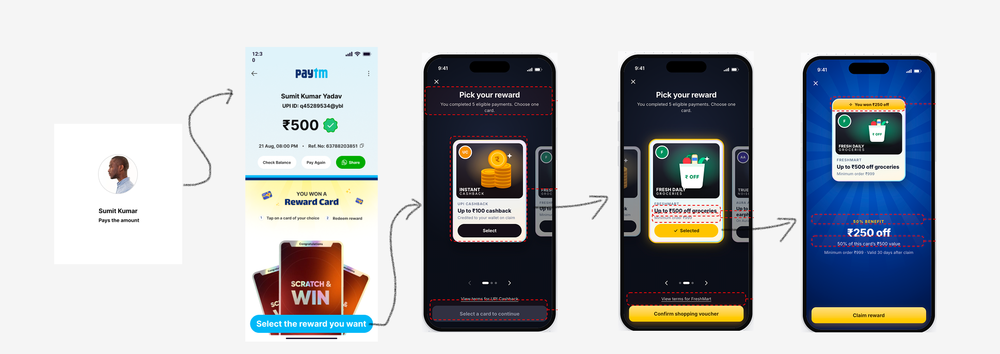
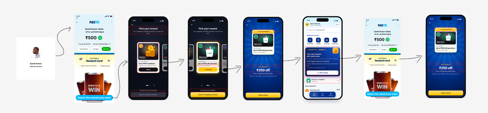

Payment confirms a scratch reward
0 · Hero
Making UPI rewards worth earning.
Business goal: increase the share of users who return to make another Paytm UPI payment. User problem: random scratch cards feel irrelevant, uncertain, and out of the user’s control.
Scope: product design for reward progression, choice, and redemption—not merchant partnerships or incentive economics.
1. The Problem
Random scratch cards train users to stop looking.
The current mechanic assigns an unpredictable offer after every payment. Four things can go wrong: the offer is irrelevant, the value is uncertain, the user has no control, and over time they stop checking entirely.
Scroll horizontally to follow the four supplied mobile screens →
Supplied UI flow shown as provided; outcome and redemption behavior are illustrative.
2 · What users said
Irrelevant, uncertain, and out of their control.
Five informal conversations surfaced a clear pattern: people liked the idea of rewards but abandoned the experience once outcomes felt random and unusable.
“Most of the scratch cards gave me vouchers I never redeemed.”Abhishek
“It stopped feeling worth checking.”Shubham
“Cashback. I know I’ll definitely use it.”Pawan
Random scratch card“10% off a brand you don’t use · expires in 2 days”
Reward card with clear valueA chosen reward, its benefit, and its terms shown before claim.
Desk research + 5 informal conversations.
3 · The insight
Users don’t reject rewards. They reject irrelevant outcomes.
The job isn’t “open a scratch card.” It’s: “When I make payments, I want to build progress toward rewards I actually value, so my transactions feel meaningful instead of dependent on chance.”
4 · The idea
From “pay and hope” to “pay, & choose rewards yourself.”
For a user’s first five completed reward cycles, every eligible payment unlocks a choice and a full-value reward. Once the mechanic is familiar, the Home card introduces partial claiming: an eligible payment continues the streak and adds claim progress. After the user completes one partial-to-full claim cycle, they can choose reward categories for future cards.
Pay → assigned scratch card
An unpredictable offer, with no control over its value or relevance.
Pay → choose your reward
First full-value choices, then visible claim progress, then category choice.
BeforeRandom card · unknown value
AfterFull reward → partial progress → category choice
5 · Flow 01 — First-time user
One eligible payment unlocks a full-value choice.
For the first five completed reward cycles, every eligible payment gives the user one reward card to choose and redeem at 100% of its configured value. No five-payment wait before the first pick.
Activation ruleEligible payment → choose 1 of 5 cards → receive 100% of its value → redeem. Repeat for five completed reward cycles.
Scroll horizontally to follow each mobile screen →
Screen concepts shown as placeholders; supplied earlier pick/reveal screens are retained under UI exploration as prior explorations.
6 · Flow 02 — Acquainted user
After five full-value cycles, progress becomes the reward.
Once users know the mechanic, the Home screen introduces a partially claimed reward. Tapping it takes them to an eligible payment; that payment moves the claim forward and keeps their streak alive.
Transition ruleAfter five completed full-value reward cycles, introduce partial claiming. Percentages such as 40% or 50% are examples; the increment rule still needs to be set.
Scroll horizontally to follow each mobile screen →
*Illustrative percentage only. The actual progress added per eligible payment is a product rule to confirm.
7 · Flow 03 — Habit / power user
Habit users choose the categories behind their cards.
After completing at least one partial-to-full reward cycle, users can choose which categories future reward cards come from. This is the next step from learning the mechanism to shaping it around their preferences.
Category-choice unlockOne completed partial-claim → full-claim cycle unlocks category preferences. Example categories below are illustrative and depend on the eventual partner catalogue.
Scroll horizontally to follow each mobile screen →
These are updated UI placeholders, not final visual screens. The original interactive prototype predates this lifecycle model.
8 · Behind the screens
What changed in the UI — and what changed in the flow.
8A
UI exploration
Earlier screen explorations are references, not the final lifecycle UI.


8B
Flow exploration · reducing friction
The lifecycle rules remove the wait for the first reward and introduce complexity only after the user understands the loop.
No progress gate before the first reward.
Progress adds on; the streak stays visible.
More control unlocks after the mechanic is familiar.
9 · Measuring success
What I’d track if this shipped.
This is a measurement plan, not results. The prototype proves the flow works end to end — it cannot prove retention went up.
| Measure | What it tells us |
|---|---|
| Repeat Payment Rate | Did users come back to pay again? |
| Reward redemption rate | Were claimed rewards actually used? |
| Drop-off by step | Where does the flow lose people? |
| Payment completion rate (guardrail) | Did rewards slow down paying? |
10 · Reflection
What this concept proved — and what it didn’t.
Choice helps, but the catalogue matters more. Three irrelevant cards are still three irrelevant cards.
Progress makes the path legible. “40% claimed” makes the next eligible payment’s purpose visible.
A prototype proves logic, not retention. It shows the flow works end to end. It cannot show that repeat payments go up.
Next step: Test with frequent UPI users, compare thresholds, and review card relevance with real partner offers.
Part 2 · Documentation
Research, decisions, and evidence behind the flow.
Expand a section to explore the artifacts. The Documentation navigation is collapsed by default.
Why I chose Paytm Rewards
Every app moves money. The moment after payment is one place the experience can feel different.
PRODUCT CONTEXTThey appear around everyday payments—and the conversations suggest people are disengaging from them.
DESIGN OPPORTUNITYThat makes the post-payment reward moment a meaningful place to explore a better experience. This is a design opportunity, not a claim about Paytm’s business results.
Design goals, scope & constraints
Business goalIncrease the share of users who return to make another Paytm UPI payment.
Design questionCan choosable reward cards and a staged claim loop make rewards worth engaging with?
In scope · product designReward progression, choice, eligibility, claim states, and the payment-to-redemption flow.
Out of scope · business-ledMerchant partnerships, reward inventory, incentive economics, and backend eligibility systems.
Success hypothesis: A more engaging reward journey may increase redemptions and support repeat-payment retention. Both require measurement; neither is a result of this concept.
Research method & participants
Desk research plus five informal conversations with frequent UPI users. Questions were asked in normal conversation, not formal interviews. This is not a usability study, a representative survey, or a controlled experiment.
Abhishek Purty
Irrelevant coupons reduced reward value; prefers cashback.
Pawan K
Valuable cashback influenced app preference; random offers reduced interest.
Shubham
Stopped checking Paytm rewards; prefers Kiwi’s predictable benefits.
Gourav Aggarwal
Random vouchers reduced trust; choosing a goal could add motivation.
Anshu
Prefers CRED because rewards feel intentional and selectable.
Participant summaries, not full transcripts.
Synthesis · atomic notes to clusters
Atomic notes · paraphrased, not verbatimIrrelevant vouchers often go unused. Cashback is easy to understand and use. Reward checking stopped feeling worthwhile. Known outcomes feel more predictable. Choice may make rewards feel relevant. Clear value can give a reason to engage. Three clustersCluster ARewards stopped feeling like rewards Cluster BKnown value feels safer Cluster CChoice restores some control
Repeated irrelevant rewards make checking feel not worth the attention. Opportunity: rebuild confidence.
Cashback and transparency make value easier to understand. Opportunity: state value and terms clearly.
Relevance and agency may make rewards more worth earning. Opportunity: let users shape the outcome.
Competitive benchmarking
Participants associated Kiwi with known, transparent benefits before acting.
TAKEAWAY · MAKE VALUE LEGIBLEParticipants described rewards as intentional and selectable.
TAKEAWAY · OFFER A CHOICEThe supplied earlier flow assigns rewards after payment; these conversations suggest random assignment can feel low in relevance.
OPPORTUNITY · KEEP THE MOMENT, CHANGE THE MECHANICThe design direction borrows from Kiwi’s clarity and CRED’s perceived agency while retaining Paytm’s post-payment reward moment. This is a small qualitative comparison, not a full competitor audit.
Jobs to be done · full
“When I make digital payments, I want to build progress toward rewards that are valuable and relevant to me, so my everyday transactions feel meaningful instead of dependent on chance.”
“I want to feel recognised for my everyday actions and know that my payments are helping me achieve something I actually value.”
“I want to use a payment app that consistently provides meaningful rewards, so it becomes my preferred payment experience.”
Problem statement · How might we
How might we help frequent UPI users stay engaged with rewards by making every payment contribute toward rewards they value?
Design directions & six decisions
Three directions exploredDirection 1 · Instant choicePick 1 of 3 after payment Direction 2 · Choose a categoryPick a category; receive later Direction 3 · Progress to rewardPayments build toward a choice
Simple to understand, but not much reason to keep paying.
Adds preference but keeps random assignment.
Progress adds motivation and agency.
Current lifecycle evolution: Start with full-value choice for the first five eligible reward cycles, introduce partial claiming to acquainted users, then unlock category choice after one completed partial-to-full cycle.
Six decisions shaping this version01 · Full value first
First five completed cycles: every eligible payment unlocks a card choice at 100% of value.
02 · Teach before adding steps
Do not make a new user wait through a progress threshold to experience the first reward.
03 · Partial claim after cycle five
Introduce a progress card only after five completed full-value reward cycles.
04 · Continue from Home
A partially claimed card shows its state; tapping it begins an eligible payment to continue the streak.
05 · Unlock categories after mastery
After at least one partial-to-full claim cycle, let habitual users shape their reward pool.
06 · Keep redemption explicit
Show the full claimed value, terms, and a clear redeem action.
User lifecycle
Progress values such as 40% and 50% are examples. The exact increment and eligibility rule remain to be validated.
How it was built & prototype caveats
Colour and type tokens, spacing, buttons, progress segments, reward cards and device frames.
A reducer tracks payments, progress, pick, reward, reveal, and redemption.
A scripted journey can be watched or explored by hand.
Important: The preserved interactive prototype predates the lifecycle model above. It currently uses an earlier threshold-based reward flow and does not implement instant full-value cycles, the acquainted partial-claim card, or category unlocks. It must be rebuilt before it can validate this design.
Browser-only React and TypeScript build, bundled into one HTML file. It has not been tested on physical phones.
Full measurement plan
| Measure | What it tells us | Stage |
|---|---|---|
| Repeat Payment Rate | Did users return to pay again? | Business outcome |
| Reward redemption rate | Were claimed rewards actually used? | All cohorts |
| Cycle completion | Do users complete the first five full-value cycles? | Activation |
| Partial-claim continuation | Do eligible payments advance the partial card? | Acquainted |
| Category selection | Do habitual users set a preferred reward pool? | Habit / power |
| Drop-off by step | Where does the flow lose people? | All cohorts |
| Payment completion rate | Do rewards slow down paying? | Guardrail |
Limitations, caveats & open questions
What is knownFive informal conversations; participant summaries; existing exploratory UI references.
What is not validatedThe five-cycle transition, partial-progress increments, category unlock, reward economics, and retention impact.
- What counts as one completed reward cycle?
- How much progress does an eligible payment add to a partial claim?
- Can users keep a partial card if a payment is ineligible or fails?
- How do we prevent payment splitting to game progress?
- Which categories and partner offers will be available?
- Does the reveal remain satisfying after repeated use?